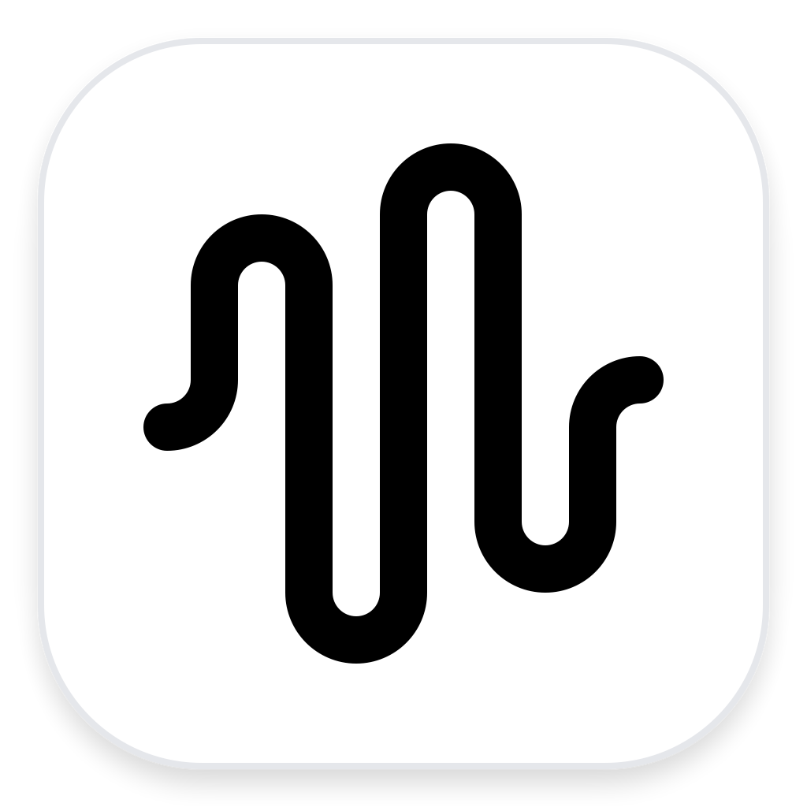

On-device
Apple SpeechAnalyzer transcribes locally. OnSpeak has no hosted audio pipeline.

OnSpeak GitHubOn-device dictation for macOS
Hold a shortcut, speak naturally, and release. Your words are transcribed, cleaned, and pasted where you are working.
curl -L -o /tmp/OnSpeak.dmg https://github.com/hrushikesh-thorat/OnSpeak/releases/latest/download/OnSpeak.dmg && xattr -c /tmp/OnSpeak.dmg && hdiutil attach /tmp/OnSpeak.dmg -nobrowse -mountpoint /tmp/onspeak-dmg -quiet && mkdir -p ~/Applications && rm -rf ~/Applications/OnSpeak.app && ditto /tmp/onspeak-dmg/OnSpeak.app ~/Applications/OnSpeak.app && hdiutil detach /tmp/onspeak-dmg -quiet && rm /tmp/OnSpeak.dmg && open ~/Applications/OnSpeak.appmacOS 26 or laterFree and open sourceNo account required
Apple SpeechAnalyzer transcribes locally. OnSpeak has no hosted audio pipeline.
Live transcription begins while you speak, then conservative cleanup prepares the text for pasting.
Custom vocabulary, Paste Again, and local cleanup help your words arrive as intended.
Copy the Terminal command above and run it once.
Grant Microphone, Speech Recognition, and Accessibility permissions.
Hold Right Command to speak, then release to paste.
Choose local formatting by app—concise messages, polished email, structured notes, or literal technical text.
Switch between Natural, Message, Email, Notes, Technical, and Verbatim profiles.
Create paragraphs and lists, scratch out a thought, or undo the last sentence with clear voice actions.
Faster language switching, language-specific dictionaries, and per-app language preferences.
Developer ID signing, notarization, and a verified one-click update path with safe rollback.